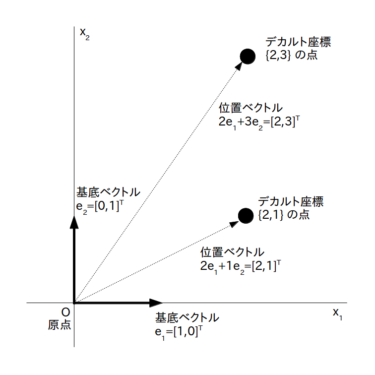
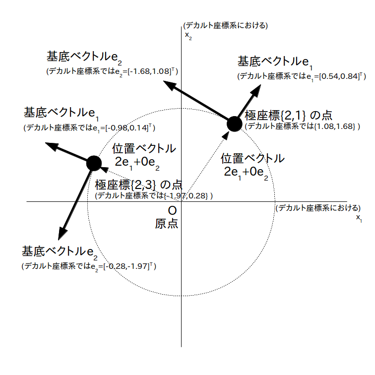

前のページで座標系、つまりベクトル空間に座標と位置ベクトルの組が与えられている世界を考えましたが、あまりにも漠然とし過ぎているので、何か基準となる座標系をひとつ作ってそれを元にして議論を進めたいと思います。
この基準となる座標系は別に自分で好きに決めて良いのですが(※)、今回は一番分かりやすくて馴染みがある「デカルト座標系」を基準の座標系にしたいと思います。なお分野によっては「カーテシアン座標系」とも呼ばれています。
※ 前のページに書いたように基底ベクトルや成分が数ベクトルですら無くても良いです。
さてデカルト座標系とは各点に座標 $\{x^1,x^2\}$ を適当に割り振ったあと、基底ベクトルを正規直交(数)ベクトル、つまり
\begin{align} e_1 = \left [ \begin{array}{c} 1 \\ 0 \end{array} \right ] \\ e_2 = \left [ \begin{array}{c} 0 \\ 1 \end{array} \right ] \end{align}とし、更に位置ベクトルの成分$\{a^1,a^2\}$を座標、つまり
\begin{align} a^1 = x^1 \\ a^2 = x^2 \\ \end{align}とした座標系です。すると位置ベクトルは
\begin{align} x^1e_1 + x^2e_2 \label{eq:vec} \end{align}となりますが、式 \eqref{eq:vec} を展開すると
\begin{align} x^1e_1 + x^2e_2 = x^1 \left [ \begin{array}{c} 1 \\ 0 \end{array} \right ] +x^2 \left [ \begin{array}{c} 0 \\ 1 \end{array} \right ] =\left [ \begin{array}{c} x^1 \\ x^2 \end{array} \right ] \end{align}ですので、デカルト座標系の位置ベクトルは座標を単に数ベクトル化しただけの形となっています(図1)。 またデカルト座標系を与えたベクトル空間(正確にはアフィン空間)を「ユークリッド空間」と呼びます。
デカルト座標 {2,3} の点と {2,1} の点とそれらの点に対応した位置ベクトル
こんなの当たり前の話じゃないの？と思う人が大半だと思いますが、実はデカルト座標系の様に位置ベクトルの成分と座標が同じ値になる座標系は例外的なことに注意が必要です。
座標は各点に好きに割り当てることが出来るただのラベルなので、より一般的な座標系では位置ベクトルを 式 \eqref{eq:vec} の形で表す事が出来ません。その様な座標系の典型例は皆さんもよく知っている極座標系です。
(見辛くて済みませんが)図 2 はある点の極座標系での座標や基底ベクトルをデカルト座標系での座標や基底ベクトルに変換して図示した例です。
この図には極座標で $\{r, \theta\} = \{2,3\}$ の点と $\{r, \theta\} = \{2,1\}$ の点がありますが、位置ベクトルの成分はどちらも$\{2,0\}$となっています。この様に極座標系では座標が変わると基底ベクトル(※)も変わるので、位置ベクトルの成分を 式 \eqref{eq:vec} の様に座標と一致させることは出来ません。
※ 正確には接ベクトル、あるいは共変基底ベクトルと言って、注目している座標の周辺(近傍と言います)だけでなら使っても良い基底です。その座標からある程度離れたら使えなくなるので、この例のように原点から遠く離れた座標にある点を位置ベクトルで表す事は実はあまり意味がありません。
極座標 $\{r, \theta\} = \{2,3\}$ の点と $\{r, \theta\} = \{2,1\}$ の点、及びそれらの点における基底ベクトル(接ベクトル、共変基底ベクトル)を基準であるデカルト座標系における座標、基底ベクトルに変換して示した図
なお極座標系の様に「座標がねじ曲がっている座標系を持つ空間」を「多様体」と言います(※)。
※ 正確には「局所的にユークリッド空間とみなせる位相空間」を多様体と言います。
普段ユークリッド空間の中で生活しているせいか、「多様体では位置ベクトル成分が必ずしも座標と一致しない」ことに気が付いていない人が意外に多いです。その結果「公式を丸暗記してテストでは100点取れたけど多様体って何なのか結局分からなかった」という悲劇が生まれ続けている訳です。